Partial pair distribution functions, thermal broadening, Keen's G(r), D(r) and T(r) with their exact limits, and the Fourier route to F(Q).
Counting pairs at each distance
Thermal motion broadens the peaks
Keen's total functions: G(r), D(r), T(r)
Into reciprocal space: F(Q) and the box's ringing
The transforms
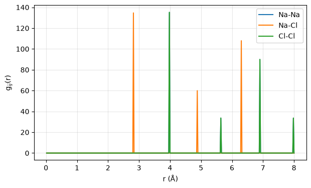
Partial pair distribution functions of the ideal NaCl lattice: every interatomic distance is a delta function on RMCProfile's r grid. The first Na–Cl shell sits at a/2 = 2.82 Å, the first Na–Na and Cl–Cl shells at a/√2 = 3.99 Å. — Figure 1 · notebook §1 · chapter 1, cell 3
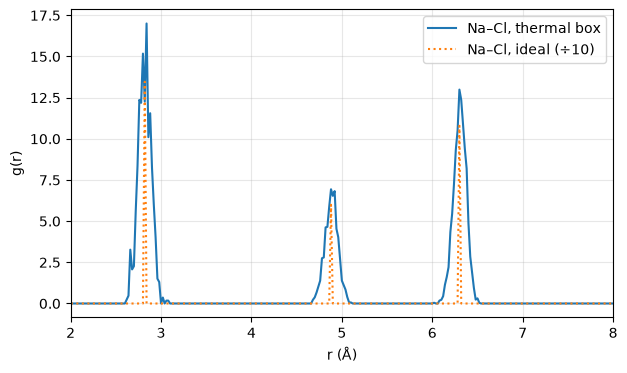
The Na–Cl partial of the thermally displaced box (0.05 Å per coordinate) against the ideal lattice's: the shells broaden into peaks of width ≈ 0.07 Å, the coordination numbers under them do not change. — Figure 2 · notebook §2 · chapter 1, cell 5
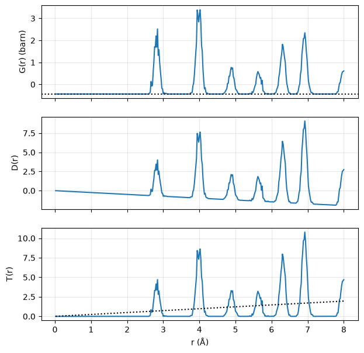
Keen's three real-space functions for the thermal NaCl box. G(r) starts at −(Σ c b)² (dotted), D(r) = 4πrρ₀G(r) starts at zero with a negative slope, and T(r) oscillates about the straight line 4πrρ₀(Σ c b)² (dotted). — Figure 3 · notebook §3 · chapter 1, cell 7
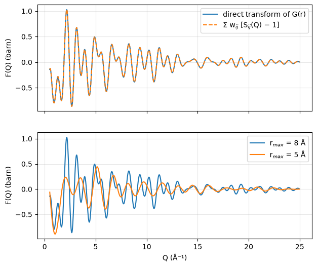
Top: F(Q) of the thermal box by the direct transform and through the Faber–Ziman partials — identical. Bottom: the same function from a 5 Å cut of the box: what the cut removes is the transform of G(r) between 5 and 8 Å, a ripple whose Q-period is set by those shells — the reason RMCProfile convolves the data with the box function rather than pretending the model reaches infinity. — Figure 4 · notebook §4 · chapter 1, cell 9
L2 · notebook §5–6
Monte Carlo and Metropolis
One atom moves, a histogram updates, a chi-squared changes; the Metropolis rule decides — the whole algorithm in one move.
One move, by hand
χ² and the acceptance rule
The engine in six lines: rmclite
Metropolis, with a temperature
L3 · notebook §7–9
Reverse Monte Carlo
From the average structure to the data: what a fit reproduces (the pair distribution), what it does not (the coordinates), and why constraints are physics.
From the average structure to the data
What RMC does and does not recover
Constraints are physics
Why the coordinates are not recoverable
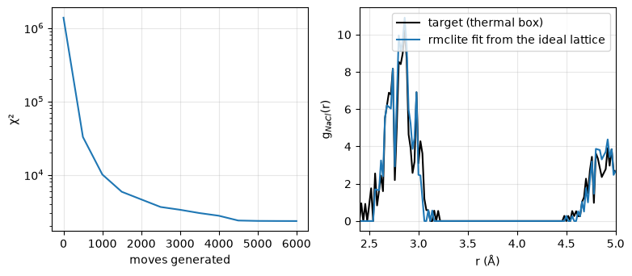
Left: χ² against generated moves for a fit from the ideal NaCl lattice toward the partials of a thermally displaced box. Right: the Na–Cl partial of the fit against its target after 6000 moves. — Figure 5 · notebook §7 · chapter 2, cell 8
L4 · notebook §10–14
Preparing a run
A unit cell becomes a supercell and an rmc6f file; the .dat keyword file and the checker; synthetic data with a known answer.
From a unit cell to a supercell
Folding back, averaging, exporting
The .dat file: keywords, blocks, flags
Check before you run
Synthetic data with a known answer
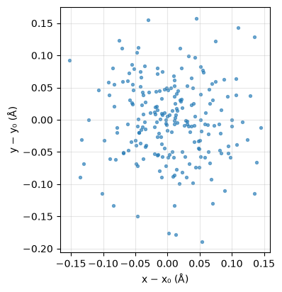
The 216 Sr atoms of the thermal SrTiO₃ box folded back into one unit cell and projected on the ab plane: a Gaussian cloud around the site whose width is the displacement amplitude put in (0.06 Å per coordinate). — Figure 6 · notebook §12 · chapter 3, cell 7
L5 · notebook §15–18
Fitting with RMCProfile
RMCProfile computes what the toolkit computes; a real refinement of synthetic neutron data; CONVOLVE and the finite box; the same data through rmclite.
One pass: RMCProfile computes what we compute
The refinement
CONVOLVE :: and the finite box
The same data through rmclite
The box function
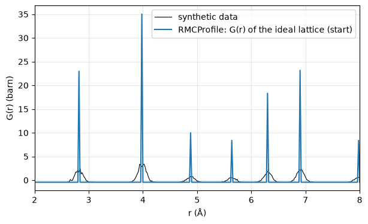
Before any move: the synthetic G(r) 'data' (thermal box plus noise) against RMCProfile's calculated G(r) of the ideal-lattice starting box, read back from its _PDF1.csv. The delta-sharp lattice peaks must broaden into the data's. — Figure 7 · notebook §15 · chapter 4, cell 5
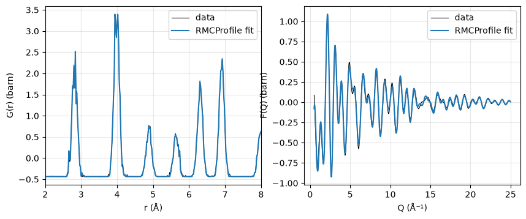
After 30 s of RMCProfile moves on the synthetic NaCl set: the calculated G(r) (left) and F(Q) (right) against the data they were fitted to. — Figure 8 · notebook §16 · chapter 4, cell 7
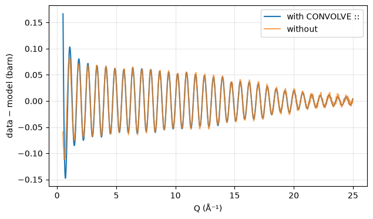
Residual of the reciprocal-space fit of the refined box with and without CONVOLVE ::. Without it the data keep their sharp features while the model, cut at the half box, rings — the residual at high Q grows. — Figure 9 · notebook §17 · chapter 4, cell 9
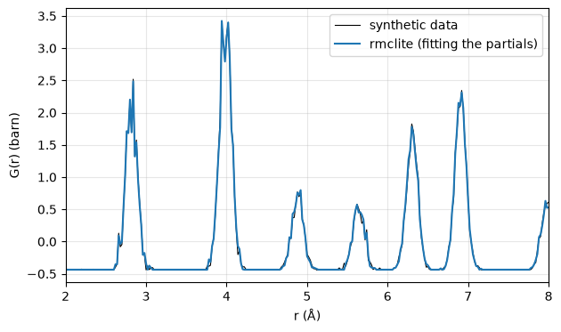
The same synthetic data reproduced by rmclite after 8000 moves from the ideal lattice; rmclite fitted the three partials, RMCProfile in §16 fitted the total G(r) and F(Q). — Figure 10 · notebook §18 · chapter 4, cell 11
L6 · notebook §23–27
Constraints as physics
Closest approach, distance windows, bond potentials, fixed coordination and bond valence sums — measured on refined boxes.
Why data are not enough
Closest approach: MINIMUM_DISTANCES
Windows, potentials, coordination
Bond valence sums
The restraint terms
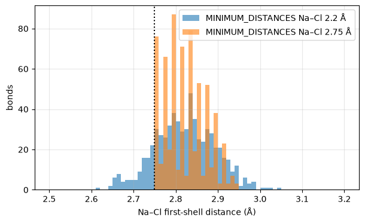
The Na–Cl first-shell distances of two refined boxes: with the closest approach at 2.2 Å the thermal shell is reproduced on both sides of 2.82 Å; with it at 2.75 Å (dotted) no bond can be shorter, and the distribution is cut off there. — Figure 15 · notebook §24 · chapter 6, cell 5
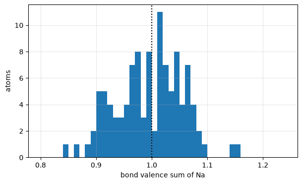
Bond valence sums of the 108 Na atoms in the box refined under RMCProfile's BVS restraint, computed with the toolkit's own calculator (R₀ = 2.15 Å, b = 0.37 Å, cutoff 3.2 Å): centred on +1, the nominal valence. — Figure 16 · notebook §27 · chapter 6, cell 11
L7 · notebook §28–31
Corrections
What the instrument does to G(r) and what RMCProfile does about it — measured, not assumed: the damping is Gaussian, the nanoparticle keyword corrects the baseline.
What the instrument does to G(r)
Damping, measured: Gaussian, not exponential
The right damping wins
Broadening: BROADENING_CORRECTION
Nano-size: what PARTICLE_RADIUS actually changes
The three corrections, as the program applies them
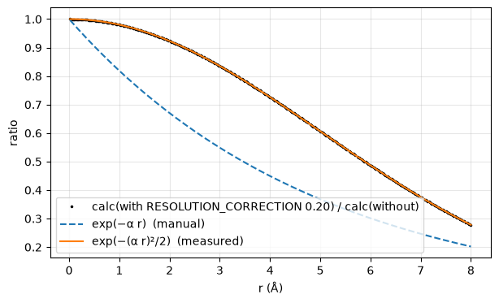
The damping RMCProfile applies for RESOLUTION_CORRECTION 0.20, measured as the ratio of two calculated G(r) columns of the same box: a Gaussian in r, not the exponential the manual writes. — Figure 17 · notebook §29 · chapter 7, cell 5
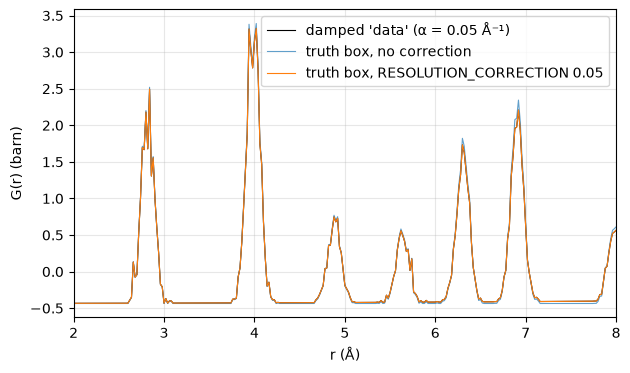
Synthetic G(r) damped by exp(−(0.05 r)²/2) against RMCProfile's calculated G(r) of the truth box without and with the matching RESOLUTION_CORRECTION: the corrected model's peaks shrink with r the way the data's do. — Figure 18 · notebook §29 · chapter 7, cell 7
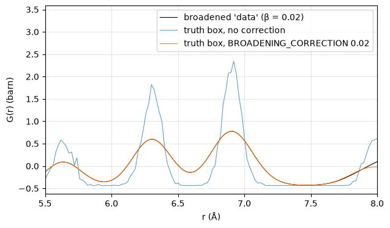
At large r the r-dependent broadening is visible: the uncorrected truth-box peaks are narrower, the corrected ones spread like the synthetic data's. — Figure 19 · notebook §30 · chapter 7, cell 9
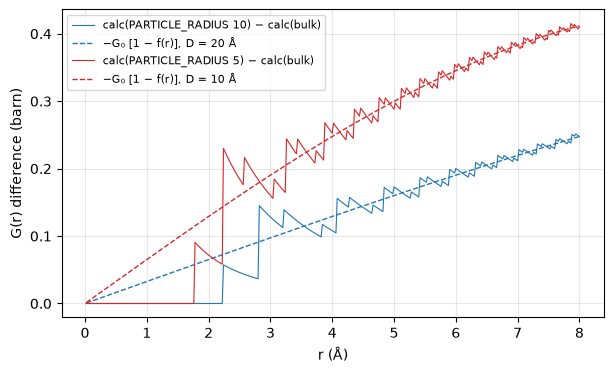
What PARTICLE_RADIUS adds to RMCProfile's calculated G(r) of the same box for radii of 10 and 5 Å (solid), against the bulk baseline −G₀ multiplied by one minus the spherical shape function of a particle of diameter 2R (dashed): the keyword replaces the uniform background, not the peaks, and does nothing below the closest approach. — Figure 20 · notebook §31 · chapter 7, cell 11
L8 · notebook §19–22, §32–34
Beyond neutrons
X-ray form factors and contrast, an honest X-ray run, Bragg profiles from a Rietveld refinement, EXAFS on the shipped exercise, magnetic and diffuse fits described.
X-rays see electrons: the form factor
Contrast: the same box, two radiations
An X-ray run, and what it does not confirm
Bragg profiles: the long-range order
EXAFS on the shipped exercise
Magnetic and diffuse: described, not run
X-ray weights and the normalisation question
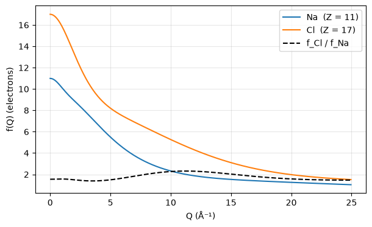
X-ray atomic form factors of Na and Cl from the Cromer–Mann tables: Z electrons at Q = 0, falling with Q; the ratio between them is not constant, so an X-ray F(Q) mixes the partials with Q-dependent weights. — Figure 11 · notebook §19 · chapter 5, cell 3
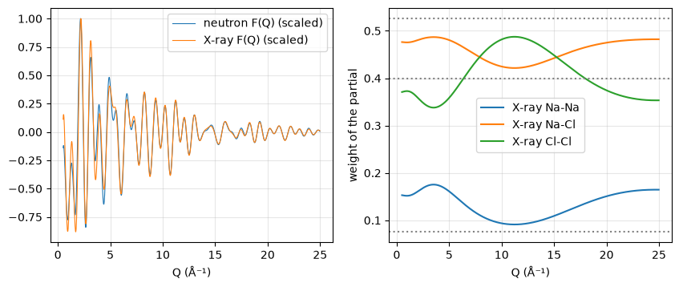
Left: the neutron and X-ray total scattering functions of the same thermal NaCl box. Right: the X-ray weights of the three partials along Q (solid) and the neutron ones (dotted, normalised): X-rays weigh Cl–Cl less and Na–Cl more than neutrons do, and the balance drifts with Q. — Figure 12 · notebook §20 · chapter 5, cell 5
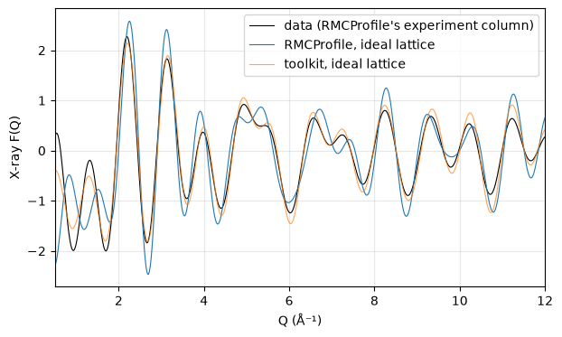
RMCProfile's X-ray F(Q) of the ideal NaCl lattice against the toolkit's for the same box and the synthetic data: same scale and peak positions, a shape that agrees only in part — the open question of finding N-8. — Figure 13 · notebook §21 · chapter 5, cell 7
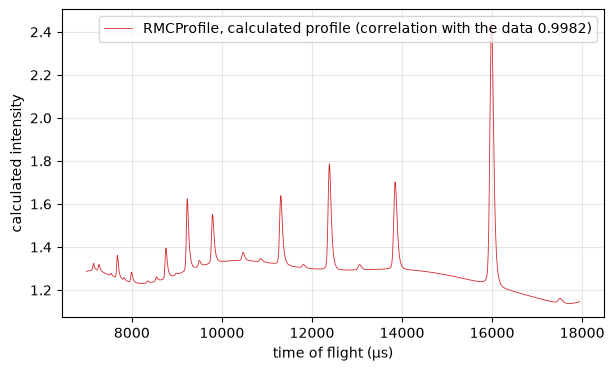
RMCProfile's calculated Bragg profile for the shipped SF₆ configuration — the average structure of the 4 320-atom box, fitted together with G(r) and F(Q). The exercise's measured profile is not reproduced here (it belongs to the package); its agreement with this curve is the correlation printed in the legend. — Figure 14 · notebook §22 · chapter 5, cell 9
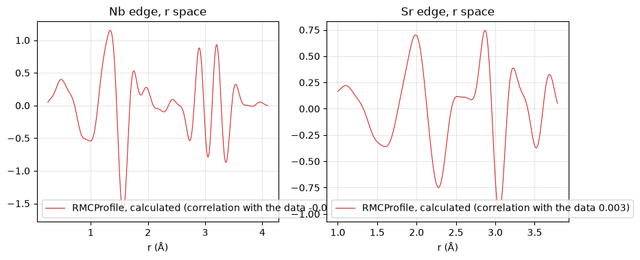
The two EXAFS edges of the package's SnO exercise (Nb and Sr absorbers) in r space: RMCProfile's calculation for the shipped starting configuration, evaluated with no moves. The exercise's measured χ(r) is not reproduced here (it belongs to the package); the legend gives the calculation's correlation with it. — Figure 21 · notebook §32 · chapter 8, cell 3
L9 · notebook §35–38
Reading a configuration
A refined box is a statistical object: coordination numbers, bond lengths, bond angles, displacement clouds and ensembles.
A refined box is a statistical object
Coordination numbers and bond lengths
Bond angles and displacement clouds
Ensembles: several fits are better than one
Distributions from a box
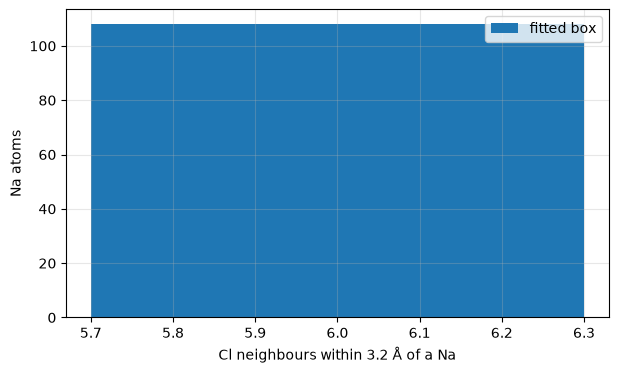
Coordination-number histogram of the refined NaCl box: every one of the 108 Na atoms keeps its six Cl neighbours — thermal motion broadens shells, it does not change coordination in a close-packed ionic crystal. — Figure 22 · notebook §36 · chapter 9, cell 5
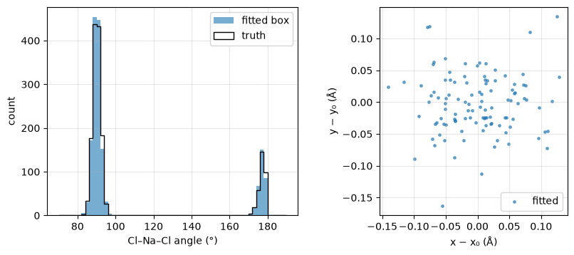
Left: the Cl–Na–Cl angle distribution of the refined box (filled) and of the truth box (line): two peaks at 90° and 180° broadened by the thermal displacements. Right: the displacement of each of the 108 Na atoms from its ideal site, projected on ab — the displacement cloud of the Na site. — Figure 23 · notebook §37 · chapter 9, cell 7
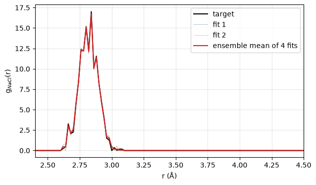
Four rmclite fits of the same synthetic data from different seeds (thin) and their mean (red) against the target (black): averaging over an ensemble beats any single box, and the spread between boxes is the error bar. — Figure 24 · notebook §38 · chapter 9, cell 9
L10 · notebook §39–40
Contributing to RMCProfile
The live cross-check and what it costs, the ecosystem around RMCProfile, and how findings become reports the developers can use.